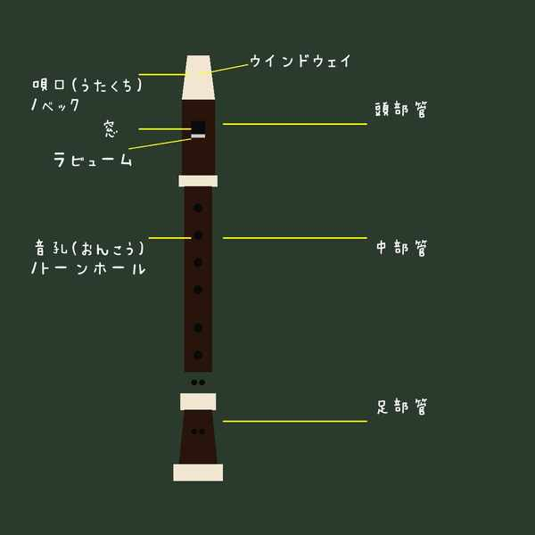
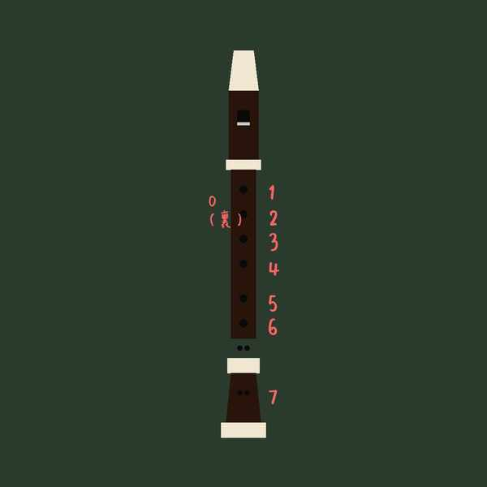

音楽の知識⑥ (アルトリコーダーの構造・奏法・運指)
中学校の音楽の授業で演奏する「アルトリコーダー」の楽器の構造と各部名称、ピッチ（音高）が変化する仕組み、タンギングやサミングなどの演奏技術、そしてテストで最も多くの配点を占める「運指（指使い）」について分かりやすく解説します！
1. チューニングとピッチ（音の高さ）の調整
- チューニング ➔ 楽器同士の音の高さ（ピッチ）を合わせること。
- 温度とピッチの関係（超頻出！） ➔ リコーダーは息を吹き込んで管内を温めることで、ピッチが高くなります。そのため、演奏前には息を吹き込んで楽器を温めてからチューニングを行います。
- 頭部管（ジョイント）の抜き差し ➔ 周りの楽器より自分のピッチが高いときは、頭部管を少し抜くことで、管を長くしピッチを低くします。
2. リコーダーの演奏基本技術
- タンギング ➔ 息を吹き込むときに、口の中で舌（た）を使って音を出したり止めたりする技術（「トゥ・トゥ・トゥ」と発音する感覚）。
- サミング ➔ 左手親指で裏側の穴（サム ホール）にわずかな隙間（半分ほど開ける）をつくって演奏する奏法。これは、主に高音（高い音）を出すときに使われます。
3. リコーダーの各部名称


左：3つの管のジョイント部と名称 ／ 右：指孔の位置関係
① 管の分割名称
- 頭部管（とうぶかん） ➔ 息を吹き込む、一番上の管（ヘッド ピース）。
- 中部管（ちゅうぶかん） ➔ 指穴が多く並ぶ、真ん中の管（ミドル ピース）。
- 足部管（そくぶかん） ➔ 一番下の短い管（フット ピース）。右手の小指などで押さえる低い音の穴があります。
② 部品の名称
- 歌口（うたぐち） ➔ 最も上にある、息を吹き込む吹き口の部分。
- ウィンドウ ➔ 歌口のすぐ下にある、四角い穴の部分。ここで空気が分かれて音が生まれます。
- トーン ホール ➔ リコーダーの表面に並んでいる指孔（指でふさぐ穴）の総称。
- サム ホール ➔ リコーダーの裏側にある、左手親指でふさぐ穴（裏孔）。
4. アルトリコーダーを演奏するときの正しい姿勢
テストの文章記述や選択肢問題でよく問われる姿勢のルールです。
- 顎（あご） ➔ 前に出さず、引く。
- 唇（くちびる） ➔ 吹き口を強く噛まないよう、力を入れすぎない。
- 肩・腕 ➔ 力んで指が動かなくならないよう、余計な力を抜く。
- 背筋（せすじ） ➔ 息を通りやすくするため、まっすぐに伸ばす。
5. アルトリコーダーの運指（指使い）
アルトリコーダーはF管（全閉でF（ファ）が出る）です。指穴番号は、裏の親指が「0」、左手の人差し指・中指・薬指が「1・2・3」、右手の人差し指・中指・薬指・小指が「4・5・6・7」となります。
① 基本的な運指と音（左手中心）
| 押さえる指穴 | 音（階名） | 特徴 |
|---|---|---|
| 左手 0, 1 | シ (B4) | 親指と人差し指のみをふさぐ |
| 左手 0, 2 | ド (C5) | 親指と中指のみをふさぐ（人差し指をあける） |
| 左手 2 | レ (D5) | 中指のみをふさぐ（親指をあける） |
| 左手 0, 1, 2 | ラ (A4) | 親指、人差し指、中指をふさぐ |
| 左手 0, 1, 2, 3 | ソ (G4) | 左手の指をすべてふさぐ |
② 定期テスト必出の重要運指（右手・サミング）
- ソ（G4） ➔ 左手 0, 1, 2, 3 ＋ 右手 4, 5, 6 の指穴をふさぐ。
- ラ（A4） ➔ 左手 0, 1, 2, 3 ＋ 右手 4, 5 の指穴をふさぐ。
- シ♭（B♭4） ➔ 左手 0, 1, 2, 3 ＋ 右手 4, 6, 7 の指穴をふさぐ。（※バロック式リコーダー特有のフォーク運指です）
- シ♮（B4） ➔ 左手 0, 1, 2, 3 ＋ 右手 5, 6 の指穴をふさぐ（※右手 4 番目の穴はふさがない）。
- 高いミ（E5）※サミング ➔ 左手 0（半分）, 1, 2, 3 ＋ 右手 4, 5 の指穴をふさぐ。
- 高いファ（F5）※サミング ➔ 左手 0（半分）, 1, 2, 3 ＋ 右手 4, 6 の指穴をふさぐ。
6. 定番曲の拍子知識
- 交響曲第9番「喜びの歌」（ベートーヴェン） ➔ 4分の4拍子。
- かっこう ➔ 4分の3拍子。
- 楽譜の最初に置かれる拍子記号『C』（コモンタイム） ➔ 4分の4拍子を表します。
🔥 定期テスト対策・暗記のコツ
① シ♭（フラット）とシ♮（ナチュラル）の運指の違い
アルトリコーダーで最も間違えやすいのがシの運指です。シ♭は「左手全閉＋右手4,6,7（5を空ける）」、シ♮は「左手全閉＋右手5,6（4と7を空ける）」です。テスト用紙にリコーダーの指穴の図が描かれ、ふさぐ場所を黒く塗りつぶさせる問題が非常によく出題されます。
② 高いミ・高いファと「サミング」
高い音（E5やF5）を出す問題では、必ず「左手0の親指（サム ホール）」を「半分だけ開ける（サミングする）」必要があります。テストで「裏の穴をどのように押さえるか」と聞かれたら、「隙間をつくる」「半分開ける」と書けるようにしてください。
③ チューニングの抜き差しひっかけ問題
「ピッチが周囲より高いとき ➔ ジョイントを抜いて、管を長くすることでピッチを下げる」
「ピッチが周囲より低いとき ➔ ジョイントを奥まで差し込んで、管を短くすることでピッチを上げる」
抜くか・差し込むかの関係を頭の中で落ち着いて整理しましょう！